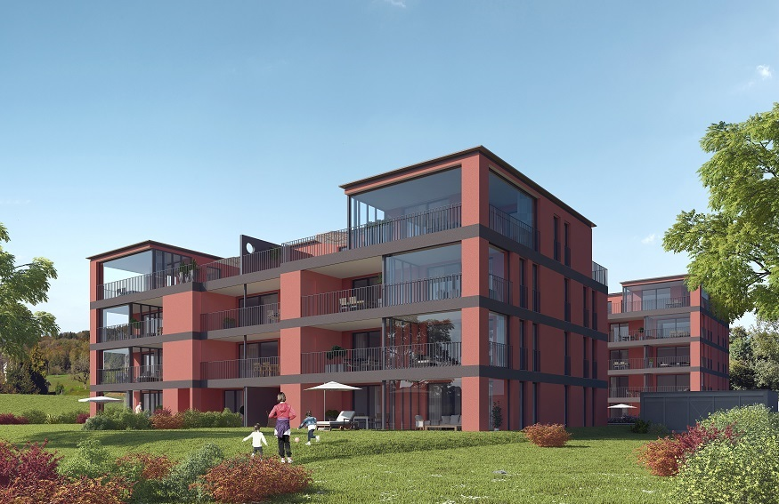

Wohnungen Etappe 2

Ab 1. Oktober 2015 sind 23 neue Wohnungen im Ziegeleigarten zu vermieten. Die Wohnungen sind familienfreundlich gestaltet, haben einen hohen Ausbaustandard und verfügen über grosse Balkone/Wintergärten bzw. Gartensitzplätze. Zu jeder Wohnung gehört ein Kellerabteil und eine eigene Waschmaschine mit Tumbler in einem der Waschräume. Tiefgaragenplätze können zu 120.- / Monat gemietet werden und sind über den Lift zugänglich. Den Mietern steht ein Gemeinschaftsraum (Atelier) für Anlässe wie Geburtstag zur Verfügung.

Ziegeleiwäg 7
| Wohnung | Zimmer | Fläche | Balkon | Miete (netto) | Plan | |
| EG 1 | 4.5 | 138.3 m2 | 23.2 m2 | vermietet | ||
| EG 2 | 5.5 | 166.8 m2 | 26.2 m2 | vermietet | ||
| OG1 1 | 3.5 | 114.0 m2 | 15.9 m2 | vermietet | ||
| OG1 2 | 2.5 | 68.4 m2 | 22.6 m2 | vermietet | ||
| OG1 3 | 4.5 | 142.1 m2 | 18.2 m2 | vermietet | ||
| OG2 1 | 3.5 | 114.0 m2 | 15.9 m2 | vermietet | ||
| OG2 2 | 2.5 | 68.4 m2 | 22.6 m2 | vermietet | ||
| OG2 3 | 4.5 | 142.1 m2 | 18.2 m2 | vermietet | ||
| OG3 1 | 3.5 | 114.0 m2 | 15.9 m2 | vermietet | ||
| OG3 2 | 2.5 | 68.4 m2 | 22.6 m2 | vermietet | ||
| OG3 3 | 4.5 | 142.1 m2 | 18.2 m2 | vermietet | ||
| Attika 1 | 3.5 | 125.3 m2 | 62.5 m2 | vermietet | ||
| Attika 2 | 3.5 | 127.2 m2 | 68.6 m2 | vermietet |
Plan der Kellerabteile als pdf.
Ziegeleiwäg 9
| Wohnung | Zimmer | Fläche | Balkon m2 | Miete (netto) | Plan | |
| EG 1 | 5.5 | 156.4 m2 | 29.3 m2 | vermietet | ||
| EG 2 | 5.5 | 166.8 m2 | 26.2 m2 | vermietet | ||
| OG1 1 | 3.5 | 114.0 m2 | 21.9 m2 | vermietet | ||
| OG1 2 | 2.5 | 68.4 m2 | 22.6 m2 | vermietet | ||
| OG1 3 | 4.5 | 142.1 m2 | 24.2 m2 | vermietet | ||
| OG2 1 | 3.5 | 114.0 m2 | 21.9 m2 | vermietet | ||
| OG2 2 | 2.5 | 68.4 m2 | 22.6 m2 | vermietet | ||
| OG2 3 | 4.5 | 142.1 m2 | 24.2 m2 | vermietet | ||
| Attika 1 | 3.5 | 125.3 m2 | 62.5 m2 | vermietet | ||
| Attika 2 | 3.5 | 127.2 m2 | 68.6 m2 | vermietet |
Plan der Kellerabteile als pdf.
Anmerkung: Bei der Berechnung der Wohnflächen wurden die Wintergärten – sofern vorhanden – mitgezählt, nicht aber – wie vielerorts gebräuchlich – die Innenwände.